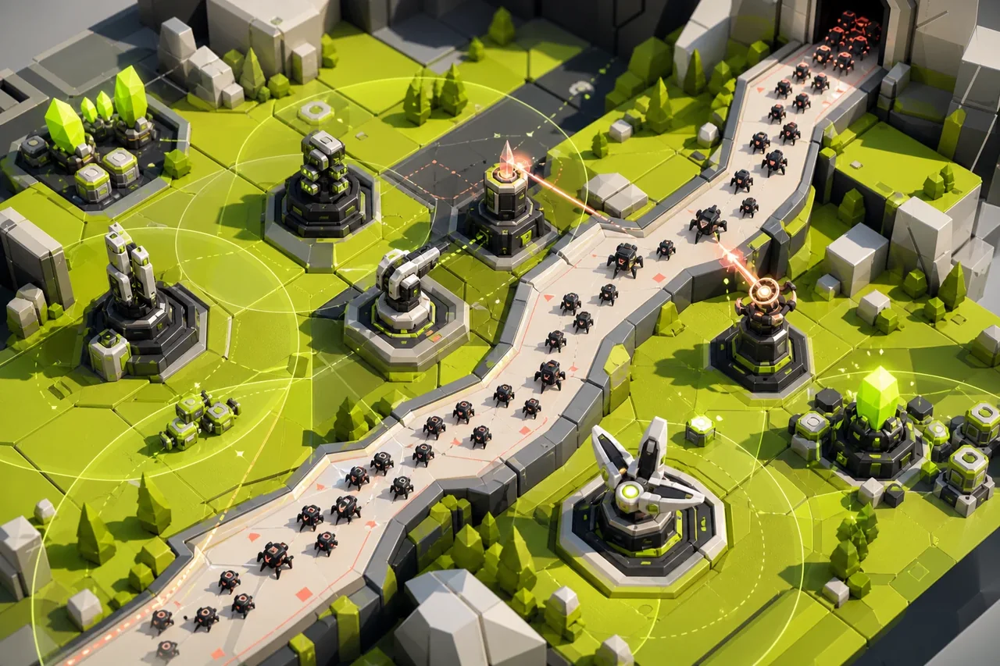

SIMULATION ONLINE
BUILD 2025.02SYSTEMIC STRATEGY
综合塔防游戏
多系统策略塔防MISSION BRIEF
融合建造、升级、敌人编队与资源循环的综合塔防原型，强调系统组合和长期可扩展性。
X 012 — 086
Y 441 — 792

独立开发 / 系统设计 / 工程实现
Godot + 数据驱动 + 行为状态机 + 对象池
Modular systems nominal
复杂度需要被编队，
而不是被堆叠。
01 THREAT DETECTED
条件分支正在失控
塔、敌人、关卡与增益之间存在大量组合关系，功能增长后容易形成难以维护的条件分支。
02 COUNTERMEASURE
以模块组合系统
以数据驱动方式拆分塔属性、攻击策略和效果模块；通过统一事件层连接波次、经济与 UI，让内容扩展不依赖核心代码改动。
03 / DEPLOYMENT PATH每一次实现，
每一次实现，
都是一座防御节点。
系统沿统一事件层流动；内容增长时，不需要拆掉核心路径。
- T-01
多类型防御塔与升级分支
- T-02
动态波次和敌人编队
- T-03
资源、增益与局内成长
- T-04
数据驱动关卡配置